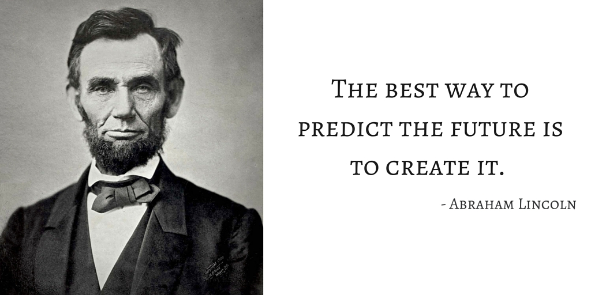

Abraham Lincoln was an American politician and lawyer who served as the 16th President of the United States from March 1861 until his assassination in April 1865. Lincoln led the United States through its Civil War—its bloodiest war and perhaps its greatest moral, constitutional, and political crisis. In doing so, he preserved the Union, paved the way to the abolition of slavery, strengthened the federal government, and modernized the economy.
Abraham Lincoln timeline:
- 1809 - Abraham Lincoln was born on February 12 in Nolin Creek in Kentucky.
- 1811 - The Lincoln family move to a 230 acre farm near Sinking Spring.
- 1816 - The Lincoln family move to Indiana.
- 1817- Legend states that Abraham shot a wild turkey but hated the experience and never hunted again.
- 1818 - On October 5, his mother Nancy Hanks Lincoln passed away.
- 1830 - The Lincoln family moves to Illinois,First political speech of Abe in favor of improving navigation on the Sangamon River.
- 1831 - Settles in New Salem, Illinois working as a clerk in the village store.
- 1832 - March: Abe becomes a candidate for Illinois General Assembly. April: The Black Hawk War and Abe enlists. August 6: Abe loses election. He and William Berry become partners and purchase a village store in New Salem.
- 1833 - The store fails and leaves the partners in debt Abe is appointed Postmaster of New Salem.October: Abe is appointed Deputy County Surveyor.
- 1834 - August 4: Lincoln is elected to the Illinois General Assembly. He starts to study law.
- 1835 - Becomes leader of the Whig Party.
- 1836 - August 1: Re-elected to the Illinois General Assembly.September 9: Lincoln receives his law license and starts to court Mary Owens.
- 1837 - Moves Springfield.
- 1838 - Re-elected to the Illinois General Assembly
- 1839 - Admission to United States Circuit Court.
- 1840 - Presents his first case before the Illinois Supreme Court.
- 1841 - Breaks off his engagement to Mary Todd starts suffering from depression.
- 1842 - Abe resumes his courtship with Mary Todd.November 4: Abe marries Mary Todd in Springfield.
- 1843 - Robert Todd Lincoln is born on August 1.
- 1844 - Sets up his own law practice.
- 1846 - Edward Baker Lincoln is born on March 10.
- 1847 - Presents resolutions to President Polk about U.S. hostilities with Mexico.
- 1848 - Gives a speech against war policy regarding Mexico.
- 1849 - Leaves politics to practice law in Springfield.
- 1850 - Edward Baker Lincoln die's on February 1.Resumes his role in the 8th Judicial Circuit gaining a reputation as an outstanding lawyer and earning the nickname of 'Honest Abe'.William Wallace Lincoln (Willie) is born on December 21.
- 1853 - Thomas (Tad) Lincoln is born on April 4.
- 1854 - Elected to Illinois legislature but declines the seat in an attempt to become a U.S. Senator.
- 1856 - Assists in the formation of the new Republican party of Illinois
- 1859 - Illinois legislature choose Democrat Stephen A. Douglas for the U.S. Senate defeating Lincoln.
- 1860 - March 6: Speech on slavery in New Haven, Connecticut.May 18: Nominated to be the Republican candidate for President of the United States.November 6: Abraham Lincoln is elected as 16th U.S. president.December 20: South Carolina secedes from the Union shortly followed by Mississippi, Florida, Alabama, Georgia, Louisiana and Texas.
- 1861 - February 11: Leaves Springfield for Washington.March 4: President Lincoln delivers his First Inaugural Address.April:12 Attack on Fort Sumter - Confederates under General Pierre Beauregard open fire marking the start of the Civil War For details of the career of President Lincoln and the progress of the American Civil War between 1861 and 1865.
- 1865 - March 17: A kidnap plot by John Wilkes Booth fails when Lincoln fails to arrive as expected at the soldiers home.April 9: General Robert E. Lee surrenders his Confederate Army to General Ulysses S. Grant at the village of Appomattox Court House in Virginia.April 14: President Lincoln and his wife Mary go to Ford's Theater to see the play "Our American Cousin" . During the third act of the play John Wilkes Booth shoots the president in the head at approx 10:13 p.m. April 15: President Abraham Lincoln dies at 7:22 in the morning. Vice President Andrew Johnson assumes the presidency. April 26: John Wilkes Booth is shot and killed in a tobacco barn in Virginia. May 4: Abraham Lincoln is buried in Oak Ridge Cemetery, outside Springfield, Illinois.